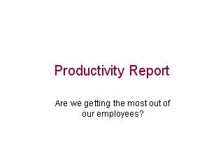
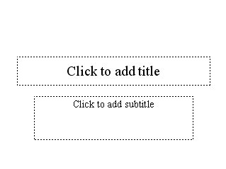
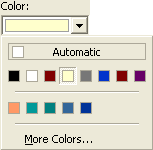
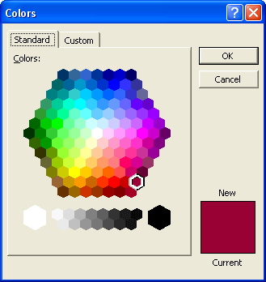

Free
powerpoint
Tutorials
|
Free
powerpoint
Tutorials
|
|
 home home |
Stay at Home and Learn | ||||
The First Slide in the Presentation |
|||||
|
Charts 1, 2, 3, 4, 5, 6, 7, 8, 9, 10, 11, 12 Flow Charts Tables
The first slide is fairly simple, with just a title and subtitle. If you've run the presentation, you'll notice that the background is just plain white. You can add a background if you like, but we are deliberately leaving it out, so as to concentrate on the main objects for the presentation. Here's what slide one looks like:  This is as simple as it gets! But it tells you what the presentation is all about, and asks a question. To quickly add this slide, start PowerPoint if you haven't already, and choose Blank Presentation, either from the dialogue box (PowerPoint 2000), or from the Task Pane on the right hand side (PowerPoint 2003). From the New Slide dialogue box in version 2000, select the first slide (Title Slide). Version 2003 users won't need to do anything, as the Title slide will appear automatically Your new Title Slide will look like this:  Click inside the Title area at the top, and add the following Title: Productivity Report Format the font to Arial, with a size of 44 points (you should know
how to do this by now). Select a colour for the Title. We've went with
a purple colour. You can get this same colour by clicking Format
from the PowerPoint menu bar. From the Format menu, select the Font
option. When the Font dialogue box appears, locate the colour dropdown
list, and choose More Colours:  From the More colours dialogue box, you'll see the purple colours near the bottom right:  The colour we chose is selected, in the dialogue box above. Once your title is formatted, and you're back to the main PowerPoint screen, click inside the box where it says Click to add Subtitle. Add the following Subtitle: Are we getting the most out of our employees? The font for this is Arial, and the size is 28 points. When you've
formatted the Subtitle, you should have a slide that looks like ours
at the top of this page. Once your first slide looks like ours, you can move on to slide two - 3D Bar Graphs.
|
||||